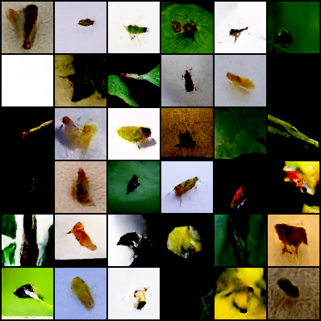
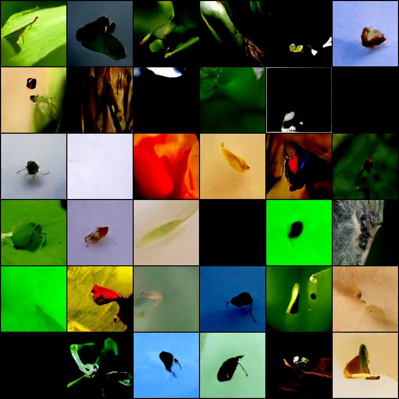
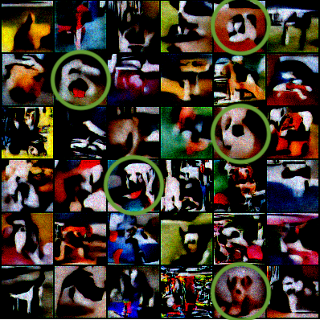
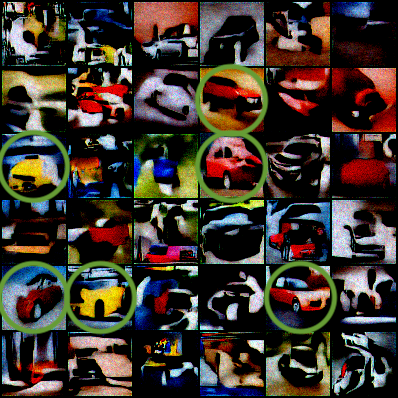
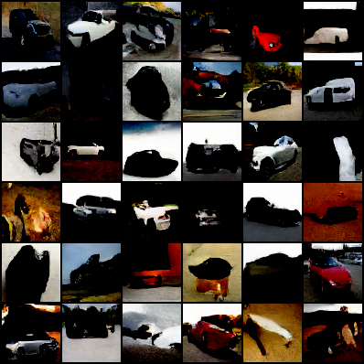
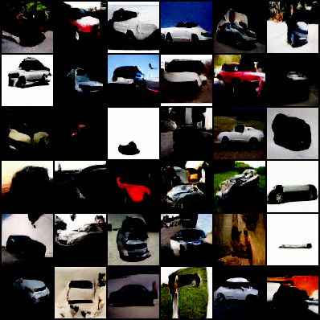

Towards Conditionality for Probabilistic Diffusion Models

Introduction
Richard Feynman once said that
What I cannot create, I do not understand.
and, in the context of machine learning, this means that for machines to understand their input data, they should learn to create it. Moreover, being able to generate unseen images opens the door to some groundshaking applications, from super-resolution, to text-to-image translation (Ledig et al. 2016; Gorti and Ma 2018).
Image synthesis nevertheless has been one of the most challenging tasks for machine learning to tackle. In fact, generative models are needed to generate new unseen images; but while we witnessed a huge leap forward in discriminative models during the first years of the last decade thanks to neural architectures, generative models initially failed to keep up. It was in \(2014\) that Goodfellow et al. came up with Generative Adversarial Networks (Goodfellow et al. 2014). GANs and their evolutions have been the state-of-the-art since then, but a very recent paper shows that similar performance can be obtained with a different model that leverages probabilistic diffusion in order to generate images (Ho, Jain, and Abbeel 2020).
Generative models have also been particularly useful to create artificial examples in order to augment datasets (Santos Tanaka and Aranha 2019), but in order to generate new images belonging to a certain class, one would need to have a conditional model. Goal of this research is therefore to integrate class-conditionality in probabilistic diffusion models.
Related work
As anticipated, the most used generative architecture is Generative Adversarial Networks (Goodfellow et al. 2014), which is composed of two networks that are trained adversarily: a generator is trained in such a way that a discriminator cannot distinguish between its generated samples and the real ones, while simultaneously training the discriminator to be able to distinguish between fake samples and real ones. To integrate class-conditionality in GANs, various approaches have been tried: Brock et al. provide class information to the generator with conditional batch norm (Brock, Donahue, and Simonyan 2018), while Odena et al. leverage an auxiliary classifier (Odena, Olah, and Shlens 2017).
Proposed method
A diffusion probabilistic model is a parameterized Markov chain: A Markov chain models the state of a system with a random variable that changes through time. For the Markov property to hold, the distribution of a state must depend only on the distribution of the previous state.
The training phase consists of two phases: a forward pass and a reverse pass, as can be seen in 1. In the former, also called the diffusion process, Gaussian noise is added to the image according to a fixed schedule so each transition in the Markov chain \(q(\mathbf{x}_{t}| \mathbf{x}_{t-1})\) represents the addition of Gaussian noise. In the latter, the transitions of a reverse Markov chain are learned in order to reconstruct the destroyed signal; the parameters are learned by optimizing the variational bound on negative loglikelihood:
\[\begin{align} \mathbb{E}\left[ - \log p_{\theta}(\mathbf{x}_0) \right] &\leq \mathbb{E}_q \left[ - \log \frac{p_\theta (\mathbf{x}_0, \dots, \mathbf{x}_T)}{q(\mathbf{x}_1, \dots, \mathbf{x}_T|\mathbf{x}_0)}\right] \\ &= \mathbb{E}_q\left[ - \log \ p(\mathbf{x}_T) - \sum_{t \geq 1} \log \frac{p_\theta (\mathbf{x}_{t-1}|\mathbf{x}_t)}{q(\mathbf{x}_t | \mathbf{x}_{t-1})} \right] \end{align}\]
We employ the architecture suggested by the original paper, in which the denoiser is a U-Net (Ronneberger, Fischer, and Brox 2015), shown in 2.

Conditional Batch Norm
Conditional Batch Normalization was first applied to language-vision tasks to implement the intuition that the linguistic input should modulate the entire visual processing, instead of being fused only in the last part of the process. CBN builds upon Batch Normalization, in which each batch is normalized as follows to reduce the internal co-variate shift \[\text{BN}_{\gamma, \beta}(x_i) = \gamma_i \frac{x_i - \mathbb{E}(x_i)}{\sqrt{var(x_i)}} + \beta_i\] In CBN we want to predict \(\gamma\) and \(\beta\) from an embedding of the class, so that the class may manipulate entire feature maps by scaling them up or down, negating them, or shutting them off completely (Odena, Olah, and Shlens 2017).
The integration of CBN in the architecture is done by replacing the Batch Norm layers inside the denoiser architecture with conditional ones. We are going to refer to the model obtained by adding CBN to the original model as \(M_{CBN}\).
Auxiliary Classifier
Analogously to what has been done in (Odena, Olah, and Shlens 2017) for GANs, we have added an auxiliary classifier to the original architecture of the denoiser.
To provide the class information to the denoiser, the label is embedded and reshaped to be the same dimension as one of the channels of the image, i.e. \(w \times h\), and then concatenated to the input image in the channel dimension. Images are thus tensors of shape \((b, c+1, w, h)\), where \(b\) is the batch size, \(c\) is the number of channels (RGB), \(w\) is the width and \(h\) is the height.
The overall loss is then obtained as a weighted sum of the variational loss to account for the reconstruction error, and the classifier loss, which is a categorical cross entropy, where the weight is a hyper-parameter. The loss should this way be enriched with class information that should backpropagate to the parameters that are involved in the generation.
We are going to refer to the model obtained by adding the auxiliary classifier to the original model as \(M_{AC}\).
Dataset
We based our implementation on the following repository denoising-diffusion-pytorch, which provides a working PyTorch baseline.
Our original goal was to apply the model to the insect-pest dataset to create new artificial samples for dataset augmentation. The original dataset consisted of over \(75k\) images, but most of the classes had few samples and low variance between them, we therefore used a subsample of \(5\) classes, ammounting to \(\approx 25\)k samples. The dataset is not really what a data scientist would dream of, as no bounding boxes were provided, and it is often hard even for humans to understand what’s in the image. To attribute the right degree of responsibility to the model and to the dataset, we also tested the model on a different dataset from Stanford, containing \(\approx 20k\) images of cars.
To test our proposed conditional methods, to simplify the visual inspection of the results, we instead created an ad-hoc dataset of only two classes with the aim of maximizing the difference between them. To this end, we took a subset of \(\approx 10k\) images from the Stanford dogs (Khosla et al. 2011) and the Stanford cars (Krause et al. 2013) datasets.
Results
All the unconditional and conditional versions of the model that follow have been trained for \(\approx 100\) epochs. The unconditional model was tested both on low resolution sample and higher resolution ones, yielding the results that follow.
| 64 | 128 |
|---|---|
|  |  |
As it is evident from the samples, the resolution plays a strong role in generating realistic images, providing the model more information to leverage for the generation. The Inception Scores are as follow
| 64 | 128 | |
|---|---|---|
| insects | 4.2 | 4.08 |
| cars | 3.32 |
Regarding the conditional model, the two proposed methods yielded totally different results. \(M_{CBN}\) converges to a small reconstruction error, and the class of the generated images can often be inferred visually; see for example 6 which is a batch of generated images for the ‘dog’ class and 7 which is a batch of generated images for the ‘car’ class.
| class ‘dog’ | class ‘car’ |
|---|---|
|  |  |
Nevertheless, the results appear as messy color spots which do not resemble any realistic image. As the reconstruction error is small, the problem seems to be related to the sampling procedure, and indeed it might be the case that the class information is not accounted for correctly during sampling, as the CBN is only part of the denoiser and class information does not influence the rest of the sampling process.
To check whether there is a class-related distinction between the generated images, we plotted the images with t-SNE, yielding the results that can be seen in 11 and 12. The points seem to be fairly separable, indicating that the class is indeed infused in the generated images.
\(M_{AC}\) instead results in the converse, yielding almost realistic images that do not seem to be much influenced by the class. As a first attempt, we tried training the random-initialized classifier with the rest of the architecture; this resulted in a rapidly decreasing classifier loss that did not help the generation at all, but instead seemed to only worsen the results. To our advise, this was due to a process of co-adaption in which the parameters of one computational block were set to satisfy the other, and viceversa. To address this issue, we pretrained the classifier until convergence on the dataset of real images and then kept its parameters fixed during the training of the rest of the model. This yielded the results in 8 and 9;
| class ‘dog’ | class ‘car’ |
|---|---|
|  |  |
The images resemble cars, mostly ignoring the input label. We eventually tried feeding higher-resolution images to the model, but with no significant improvement. The generated images in fact do not resemble their class, but the classification loss still goes rapidly down; to provide an explanation, we visually inspected the images and found out that artifacts were present in every image (10), probably resulting from the generator ‘tricking’ the classifier, emphasizing features that resulted in high confidence guesses in the latter.
We concluded that the model was not robust enough, and therefore tried to employ a finetuned ResNet18 classifier, but this did not solve the issue.
As before, we plotted the images with t-SNE to check whether there is a class-related distinction between the images; as can be seen in 13 and 14, this time the points are all mixed up, indicating that the model fails to conditionate the generation on the class.
Conclusions
The proposed methods do not yield acceptable results, indicating that it is not enough to adapt GANs techniques for class-conditionality to probabilistic diffusion models, while this is also not straightforward to do. This also emphasizes that, while seemingly close to GANs, this family of models requires ad-hoc research, as they are based on different theorical aspects.
References
Donato Crisostomi
MSc student in Computer Science
My research interests revolve around artificial intelligence, in particular causality, meta-learning and geometric deep learning, especially when graphs are involved.